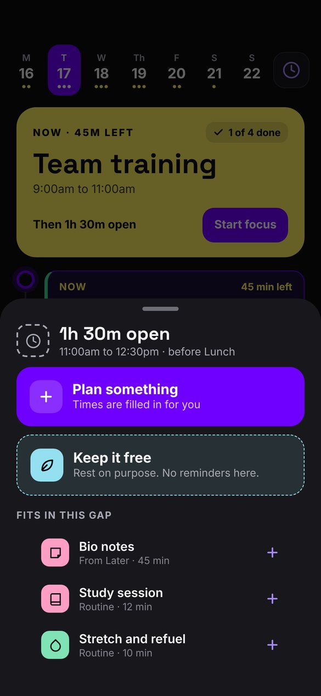
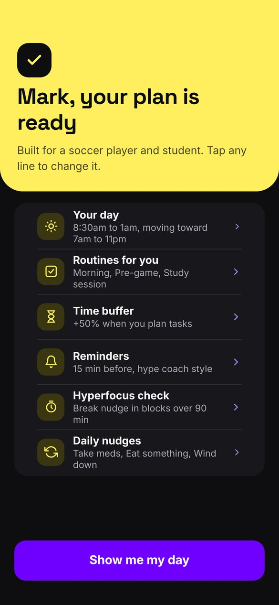

Know what's next. Every time.
Next Up turns your day into simple blocks, runs your routines step by step, and reminds you in a voice that sounds like you. Built by an athlete with ADHD, for anyone who loses track of time.
For iPhone. No account needed. Everything stays on your phone.
Built for days that don't go to plan.
For athletes, students, people at work and parents: anyone whose brain moves faster than their calendar.
Your day in blocks
See today as colour-coded blocks with a clear Now and Next. Hold a block to add 15 minutes, push it to later or finish early.
Routines, step by step
Morning, game day, study session, bedtime. Each step has its own timer, and a 2-minute version is there for low-energy days.
Reminders that sound like you
Hype coach, Calm friend or Just the facts. Pick your heads-up, and a time buffer adds extra time to tasks that always run long.
Focus timer
A focus session can start with your study and work blocks, so getting started takes one less decision.
Breathe and wind down
Breathing exercises for calming down, pre-game nerves and sleep, plus a wind-down that starts on its own each night.
Private by design
No account, no ads, no tracking. Your plans never leave your phone.
Set up in about a minute.
Three quick questions, then an optional minute to make it yours. Skip anything; you'll be asked later, one at a time.
Tell it about your days
Pick what fills your days (training, school, work, kids) and when you wake up and go to bed.
Make it yours
Choose what trips you up, how long things really take you, and how reminders should sound.
Follow what's next
Today shows one thing at a time. Gaps show as dashed Open time you can plan or keep free.
See your free time, guilt-free.
The gaps between your blocks show up as quiet, dashed slots, so open time feels real without feeling like a to-do.
- Tap a gap to plan something, with times filled in
- Or keep it free on purpose: rest is part of the plan
- Things from your Later list that fit the gap
- Count open time in your week, or just see it on Today


Miss a few days? Pick up where you are.
Next Up never counts what you missed. Come back after a break and it helps you plan just today, with older tasks waiting in Later.
Next Up is a planning tool. It is not medical advice, diagnosis or treatment, and it is not a medical device.